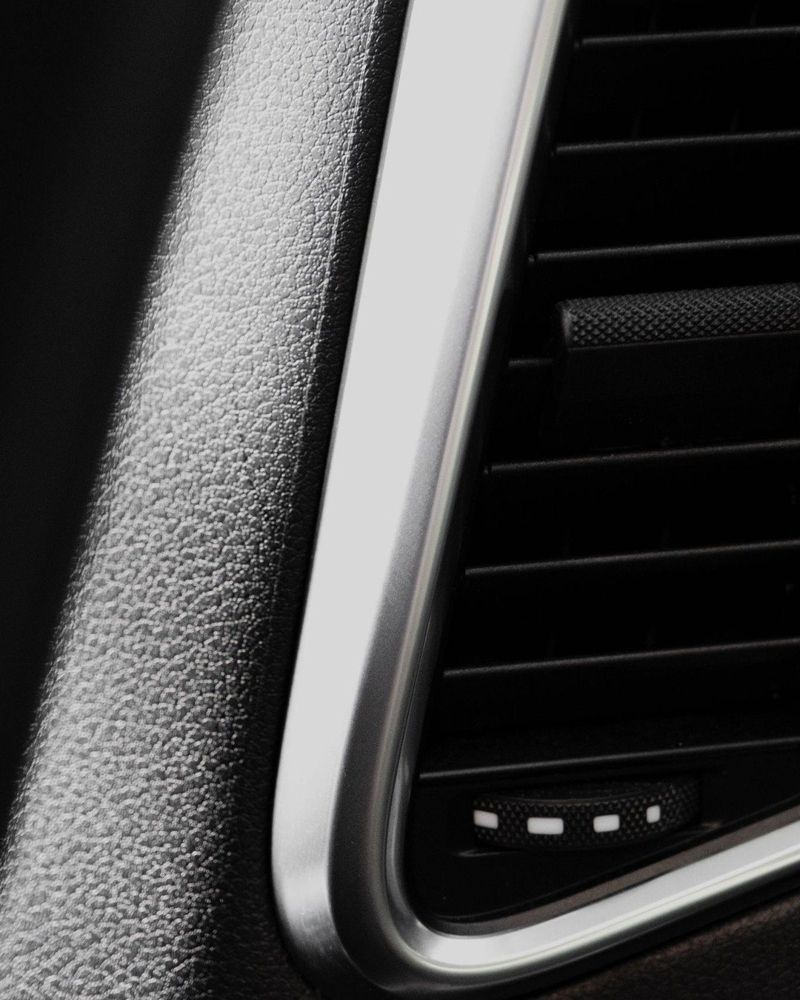
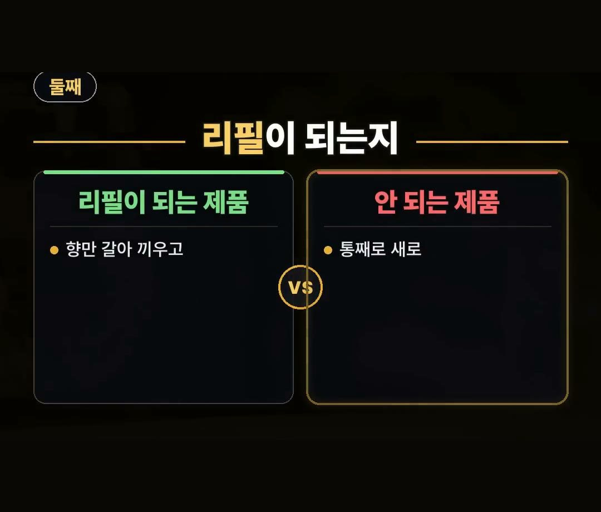
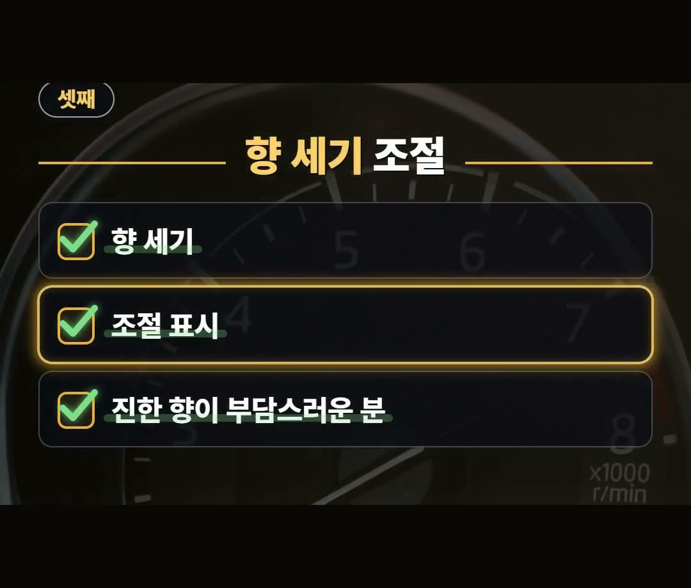

차량용 방향제 추천 고를 때 실수 줄이는 3가지 기준
※ 이 글에는 제휴 링크가 포함되어 있으며, 링크를 통해 구매하시면 일정 수수료를 받을 수 있습니다. (가격은 같습니다)
※ 이 포스팅은 쿠팡 파트너스 활동의 일환으로, 이에 따른 일정액의 수수료를 제공받습니다.
※ 이 콘텐츠는 토스쇼핑 쉐어링크 활동의 일환으로, 링크를 통한 구매가 발생하면 일정 수수료를 지급받습니다.
차량용 방향제 추천 글을 보다 보면 향부터 고르게 되기 쉽습니다.
그런데 향은 마음에 드는데 내 차에 달 자리가 없으면 그대로 서랍에 들어가게 됩니다.
이번 글에서는 향을 고르기 전에 상품 설명에서 먼저 볼 3가지를 순서대로 정리했습니다.

★아낌 소장의 한마디★ 차량용 방향제를 고를 때 향보다 먼저 볼 것을 3가지로 정리해 봤어요.
거는 자리, 리필, 향 세기 순서로 보고 향은 맨 마지막에 골라 보세요. 💡
향부터 고르면 생기는 일
향만 보고 차량용 방향제를 고르면 아쉬운 일이 생길 수 있습니다.
향은 마음에 드는데 내 차에 달 자리가 없으면 쓰지 못하고 서랍에 들어가기 때문이에요.
포장이나 상품 설명에 적힌 3가지를 먼저 보면 이런 일이 줄어듭니다.
3가지는 거는 자리, 리필이 되는지, 향 세기를 조절할 수 있는지입니다.
모두 사기 전에 상품 설명에서 먼저 볼 수 있는 내용이에요.
아래에서 하나씩 차례로 살펴보겠습니다.
첫째, 거는 자리

가장 먼저 볼 것은 거는 자리입니다.
송풍구에 끼우는지, 컵홀더에 놓는지, 걸이형인지 상품 설명에 적혀 있어요.
- 송풍구에 끼우는 방식
- 컵홀더에 놓는 방식
- 걸이형
세 가지는 다는 자리가 서로 다릅니다.
송풍구에 끼우는 방식은 송풍구에, 컵홀더에 놓는 방식은 컵홀더에 자리가 있어야 해요.
그래서 내 차에 그 자리가 있는지부터 떠올려 보세요.
그리고 어느 방식이든 운전할 때 앞을 가리지 않는 자리로 고르세요.
향이 마음에 들어도 달 자리가 없으면 쓰기 어렵기 때문에 이 항목을 맨 앞에 둡니다.
둘째, 리필이 되는지

다음으로 볼 것은 리필이 되는지입니다.
- 리필이 되는 제품: 향만 갈아 끼웁니다.
- 리필이 안 되는 제품: 통째로 새로 사야 합니다.
어느 쪽인지에 따라 다음에 살 때 사야 하는 것이 달라집니다.
리필이 되는 제품이라면 다음에는 향만 갈아 끼우면 되고, 안 되는 제품이라면 통째로 다시 사게 됩니다.
그래서 처음 살 때 리필이 되는 제품인지 아닌지를 상품 설명에서 미리 봐 두는 편이 좋습니다.
어느 쪽이 더 낫다는 것이 아니라, 사기 전에 알고 고르자는 뜻이에요.
셋째, 향 세기 조절

셋째는 향 세기를 조절할 수 있는지입니다.
진한 향이 부담스러운 분이라면 조절 표시가 있는 제품이 맞습니다.
상품 설명에 조절 표시가 적혀 있는지 살펴보세요.
이것도 따로 알아볼 것 없이 표시에 적혀 있는 내용입니다.
진한 향이 부담스럽지 않은 분이라도 조절 표시가 있는지는 상품 설명에서 함께 봐 두면 됩니다.
거는 자리와 리필을 본 다음, 마지막으로 향 세기를 보는 순서예요.
정리: 향은 맨 마지막에
보는 순서는 거는 자리, 리필, 향 세기입니다.
- 거는 자리: 송풍구, 컵홀더, 걸이형 가운데 내 차에 달 자리가 있는지, 운전할 때 앞을 가리지 않는 자리인지 봅니다.
- 리필: 되는 제품은 향만 갈아 끼우고, 안 되는 제품은 통째로 새로 사야 합니다.
- 향 세기: 진한 향이 부담스러운 분이라면 조절 표시가 있는 제품이 맞습니다.
이 3가지를 상품 설명에서 먼저 보고, 향은 맨 마지막에 고르세요.
향을 먼저 고르고 나머지를 맞추는 것이 아니라, 내 차에 맞는 것들 가운데에서 향을 고르는 순서입니다.
영상 속 상품 안내
영상 끝에 나온 상품은 토스쇼핑에 올라온 상품 가운데 하나를 소개한 것이에요.
상품 설명에 따르면 블랙체리 향 차량용 방향제이고, 1개씩 들어 있습니다.
이 상품이 위의 3가지에 어떻게 해당하는지는 이 글에서 확인하지 못했어요.
거는 자리, 리필, 향 세기 조절은 판매 화면의 상품 설명에서 직접 확인해 주세요.
제품 링크는 아래에 모아 두었어요.
📌 2026년 10월 기준 정보예요. 가격은 시기에 따라 달라질 수 있어요.
영상 화면: Pexels (Asiye Betül Dokuyucu, Dimitri Baret, K, Rüveyda, cottonbro studio, khezez | خزاز)
사진: Pexels (Abhinav Toppo, Laura Paredis)